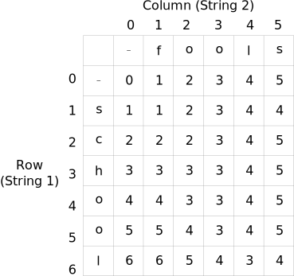
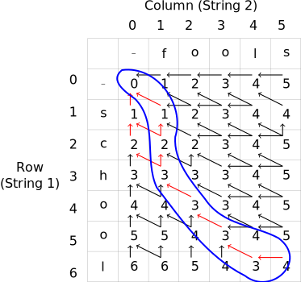
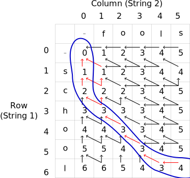

Week 5: Edit Distance Backtracing
Chris Tralie
We talked about an iterative dynamic programming solution for the string edit distance in class. The method we came up with was able to compute the optimal distance by filling in a table of costs of matching all pairs of substrings, and we were able to lookup the cost as the lower right element in this table, which corresponded to the cost between full strings. The table below shows an example for "school" versus "fools," where the optimal cost is 4

What this does not tell us is what operations were needed to get this answer. For this, we need another data structure to store what the optimal actions were at each step. The image below shows arrows drawing decisions that were optimal for every substring

To extract an optimal way to match, you must backtrace from the lower right element; that is, start at the lower right element and follow arrows until you get to [0, 0]. The red arrows show all of the decisions that are along a path that starts from [M, N] and ends up at [0, 0]. For example, one such path is
[[6, 5], [6, 4], [5, 3], [4, 2], [3, 1], [2, 1], [1, 1], [0, 0]]
The image below shows this path circled in blue

If we walk this path in the backwards direction from how we discovered it, we can translate this to the following operations to transform "school" into "fools":
Swap in an f for the s Delete c Delete h Match o and o Match o and o Match l and l Add s
This sequence has a total cost of 4 (1 swap, 2 deletes, and 1 add). But this is not the only path we could find! Consider the following path:
[[6, 5], [6, 4], [5, 3], [4, 2], [3, 1], [2, 0], [1, 0], [0, 0]]
This is shown below
This would translate into the following sequence
Delete s Delete c Swap in an f for the h Match o and o Match o and o Match l and l Add s
Interestingly, this also has a cost of 4, but it's a different way of getting that answer! (2 deletes, 1 swap, one add). And there is actually one more way (see if you can find it)
Solutions in Code
For now, let's examine some solutions to find one of these paths. We'll break ties if they exist. Next week, we'll talk about how to get all of the solutions. Here is the first solution
This prints out the following:
Swapping s in string 1 with f in string 2 (+1) Deleting c from string 1 (+1) Deleting h from string 1 (+1) Matching o in string 1 to o in string 2 Matching o in string 1 to o in string 2 Matching l in string 1 to l in string 2 Deleting s from string 2 (+1) Total Cost: 4
Interestingly, we can get identical backtracing behavior if we avoid storing the table in memory, but we recompute which one is the minimum while backtracing. This solution is a bit shorter and nicer to read! Though it has to recompute the costs of the 3 directions in the recurrence while backtracing: